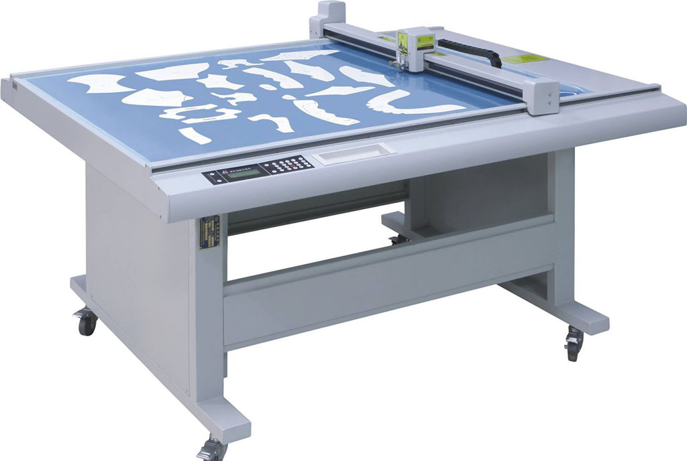
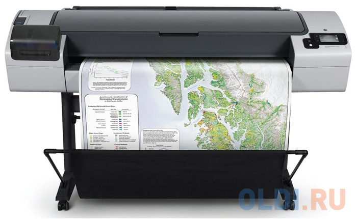
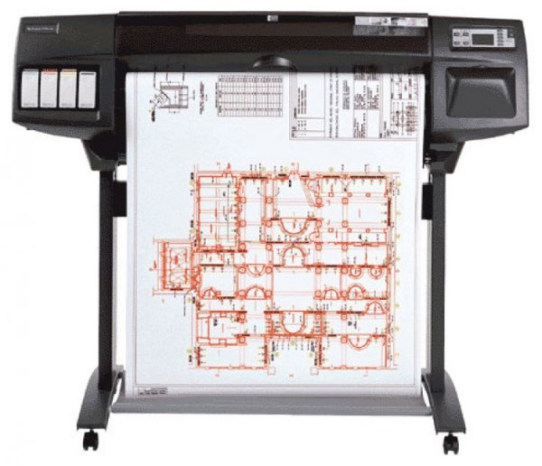
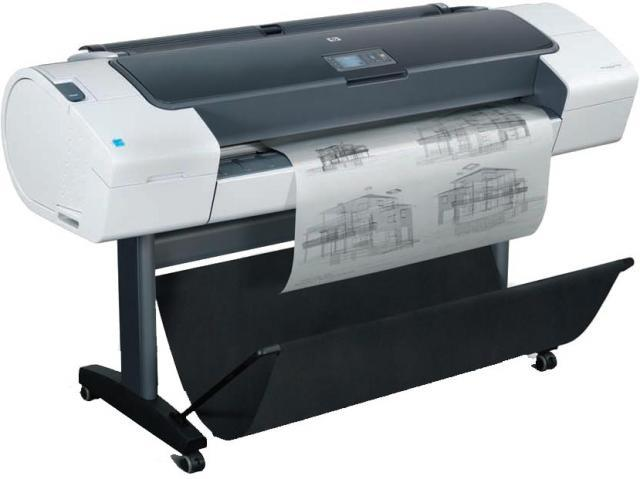

Плоттер
Графопостроитель, плоттер — устройство для автоматического вычерчивания с большой точностью рисунков, схем, сложных чертежей, карт и другой графической информации на бумаге размером до A0 или кальке.
Вернуться на Главную
Первые плоттеры работали на принципе передвижения бумаги с помощью ролика, обеспечивая тем самым координату X, а Y обеспечивалась движением пера. Другой подход представлял собой модернизированный пантограф, управляемый вычислительной машиной и имеющий шариковое перо в качестве рисующего элемента. Недостаток этого метода заключался в том, что требовалось пространство, соответствующее расчерчиваемой области. Но достоинством этого метода, вытекающим из его недостатка, является легко повышаемая точность позиционирования пера и соответственно точность самого рисунка, наносимого на бумагу. Позже это устройство было дополнено специальным кассетным держателем, который мог компоноваться перьями разной толщины и цвета.
Типы графопостроителей
Назначение графопостроителей — высококачественное документирование чертёжно-графической информации.
Графопостроители можно классифицировать следующим образом:
- по способу формирования чертежа — с произвольным сканированием и растровые;
- по способу перемещения носителя — планшетные, барабанные и смешанные (фрикционные, с абразивной головкой);
- по используемому инструменту (типу чертёжной головки) — перьевые, фотопостроители, со скрайбирующей головкой, с фрезерной головкой.

Техническая возможность графопостроения и использования электронных чертежей повлекла за собой необходимость создания устройства для их печати на бумаге. На сегодняшний день любое проектно-строительное или инженерное бюро имеет одно или несколько устройств этого класса. Плоттеры (или широкоформатные принтеры) по праву получили широкое распространение в связи с развитием компьютерной техники. Параллельно, с развитием цветной печати, принтеры широкого формата получали распространение в сфере дизайна и рекламы.
Возможности плоттера
Плоттеры делятся на планшетные, барабанные, фрикционные и рулонные.
- Планшетные плоттеры отличаются фиксацией листа форматов А3 и А2 пишущим узлом и электростатическим способом. Пишущий лист перемещается в двух координатах.
- Барабанные плоттеры работают с носителем, который крепится на вращающемся барабане.
- Фрикционные плоттеры, в них носитель перемещается с помощью фрикционных роликов. Эти графопостроители (при равных размерах чертежа) много меньших габаритов, чем барабанные.
- Рулонный (роликовый) плоттер имеет чертёжную головку, которая перемещается в одном направлении. При этом движении одновременно перемещается носитель перпендикулярно траектории головки. С помощью роликовых плоттеров можно рисовать изображения на рулонах с большой длинной и форматами А1, А0.

Изготавливают графопостроители (плоттеры) в настольном и напольном исполнениях. Изображения, получаемые с помощью плоттеров, делятся по принципу построения.
- Векторные плоттеры при создании изображений используют шариковые, перьевые рапидографы, фломастеры, карандаши. В современное время они сняты с производства.
- Растровые плоттеры наследуют конструктивные особенности принтеров. Они создают отличное изображение с помощью построчного воспроизведения.

Растровые плоттеры в свою очередь делятся по способу печати.
- Струйные плоттеры основаны на принципе струйной печати, и по сути являются широкоформатным принтером.
- Лазерные плоттеры работают используя технологию лазерной печчати.
- Светодиодные плоттеры тоже используют лазерный метод печати, но переносят изображение с барабана на бумагу с помощью специальных светодиодов.
- Фотоплоттеры фиксируют изображение на светочувствительном материале.
- Также существуют ещё термические плоттеры и микрофильм-плоттеры.

Перечислим основные эксплуатационные и конструктивные характеристики плоттеров:
- Формат оригинала
- Точность
- Размер рабочего поля
- Разрешение растровых плоттеров
- Наличие собственной памяти
- Скорость прорисовки
- Программное обеспечение
Для некоторых моделей плоттеров производятся насадки, дополняющие эти устройства функциями сканера. Многие из плоттеров производят печать из графических файлов (PCX, BMP, TIFF).